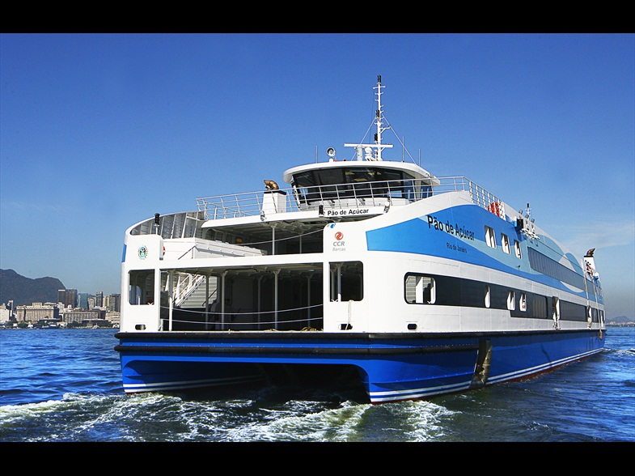
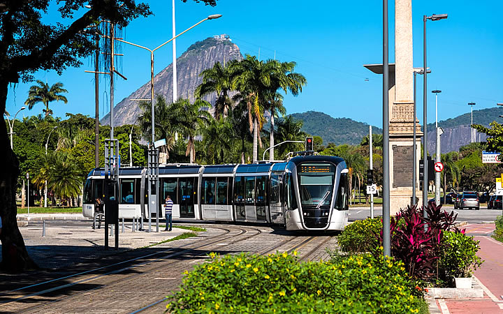

03 a 04 de Agosto de 2022
III Workshop Brasileiro de Cidades Inteligentes - WBCI (parte do CSBC2022)
Niterói, RJ, Brasil, 2022

Vista Noturna do Parque da Cidade, Niterói-RJ, by Claudney Neves, under Creative Commons license.
{kind=link}

Museu de Arte Contemporânea, Niterói-RJ, by Creative Commons, under Creative Commons license.

Instituto de Computação da Universidade Federal Fluminense IC-UFF, by Creative Commons, under Creative Commons license.

Vista do Parque da Cidade, Niterói-RJ, by Victor Tarcitano, under Creative Commons license.
{kind=link}

Forte do Imbuí, Niterói-RJ, by Jfernandofc, under Creative Commons license.
{kind=link}
O III WBCI ocorre como Evento Satélite do CSBC 2022, entre 31 de Julho e 5 de Agosto de 2022, na cidade de Niterói/RJ
Como chegar em Niterói, partindo do Rio
Deixamos aqui dicas para chegar em Niterói a partir de três pontos principais de chegada no Rio: Aeroporto Internacional do Rio (Galeão-GIG); Aeroporto de Santos Dumont (SDU); Rodoviária do Rio (Novo Rio).
1. Aeroporto Galeão para Niterói
O Aeroporto Internacional do Rio (Galeão-GIG) possui acesso rápido a Niterói através de
linhas de ônibus frequentes na linha 950D e valor de R$9,50 (verificar horários no aplicativo Moovit),
com tempo de viagem
aproximado em 1h10 (trajeto pela ponte Rio-Niterói).
Também é possível solicitar motoristas em aplicativos como Uber e 99 Taxi, com grande
agilidade no serviço (tempo aproximado de 40 min no trajeto) e custo um pouco maior do que o ônibus.
2. Aeroporto Santos Dumont para Niterói
O Aeroporto Santos Dumont (SDU) possui acesso rápido a Niterói através do
serviço das Barcas na Praça XV de Novembro (linha Praça XV para Praça Araribóia no Centro de
Niterói).
Veja horários em: http://www.grupoccr.com.br/barcas/linhas-horarios-tarifas

Os serviços das barcas são bastante frequentes durante a semana (20 em 20 minutos aproximadamente),
com horários reduzidos em finais de semana (hora em hora).
É um passeio bastante agradável, barato e rápido, de 15 minutos, atravessando a Baía de Guanabara com
vista para o
Pão de Açúcar e a ponte Rio-Niterói.
Para chegar do Santos Dumont à Praça XV, é possível ir de duas maneiras (ambas com tempo de 25 minutos):
caminhando (exige boa disposição/poucas malas); ou com VLT - Veículo Leve sobre Trilhos.
2.1 Pegando VLT do SDU para Barcas (25 min)
Para chegar do Santos Dumont até a Praça XV com VLT, basta pegar o VLT bem na saída do aeroporto,
na Linha L1/L3, que vai em direção à rodoviária, mas tenha atenção: é necessário descer antes e trocar
de linha!
Para chegar na Praça XV, é preciso trocar da Linha L1/L3 para a Linha L2 (a troca é feita na Estação
Sete de Setembro, atravessando para outra estação no outro lado da rua, não é exatamente no mesmo
ponto!).
Confira no mapa o trajeto:
https://bit.ly/3NRytwx
Também é possível ir a pé do ponto de desembarque da linha L1/L3 Estação Sete de Setembro até a Praça
XV, mas novamente,
somente é recomendado em horário diurno e com poucas malas (aproximadamente 7 minutos de caminhada).
Existe integração de tarifas no VLT, que é de validação voluntária (somente será cobrado no primeiro
trajeto, o segundo cobrará zero).

Importante: Não se esqueça de comprar o cartão do VLT antes de embarcar, pois só se vende
ticket em máquinas na estação de embarque.
{kind=link}
Também é possível solicitar motoristas em aplicativos como Uber e 99 Taxi, com grande agilidade no serviço e custo um pouco maior do que o ônibus, seja para ir direto a Niterói ou à Praça XV para pegar a barca.
2.2 Caminhando do SDU para Praça XV estação Barcas (25 min)
Caso tenha disposição, poucas malas, em horário diurno, veja o trajeto para ir caminhando de SDU para
Praça XV:
https://bit.ly/3c54STh
Por segurança, somente prefira esse trajeto durante o dia, e em demais horários, pegue um VLT ou
Uber.
3. Rodoviária Novo Rio para Niterói
A Rodoviária Novo Rio possui acesso rápido a Niterói através de
linhas de ônibus frequentes (verificar horários no aplicativo Moovit),
com tempo de viagem
aproximado em 40 min (trajeto pela ponte Rio-Niterói).
Na rodoviária, é possível pegar um VLT para a Praça XV, e de lá ir para Niterói via Barcas
(veja dicas na descrição anterior de Santos Dumont)
Também é possível solicitar motoristas em aplicativos como Uber e 99 Taxi, com grande
agilidade no serviço (tempo aproximado de 40 min no trajeto) e custo um pouco maior do que o ônibus.
Do Centro de Niterói para a UFF / CSBC
É bastante perto do Centro de Niterói até os prédios do Instituto de Computação da UFF,
onde acontecerá o WBCI/CSBC 2022.
Com disposição é possível se deslocar caminhando, em aproximadamente 20 minutos, do centro até lá.
O prédio fica na orla da praia de boa viagem, com vista para a Baía de Guanabara e belezas naturais como
o Pão de Açúcar, estando perto de monumentos do arquiteto Oscar Niemeyer, como o Museu de Arte
Contemporânea (MAC).
Também é possível pegar ônibus (veja horários no aplicativo Moovit).
Finalmente, é possível solicitar motoristas em aplicativos como Uber e 99 Taxi, com grande
agilidade no serviço e custo um pouco maior do que o ônibus.
Breve histórico do evento
O Workshop Brasileiro de Cidades Inteligentes (WBCI) teve sua primeira edição em 2018, reunindo, de forma bem-sucedida, trabalhos com foco na discussão em tecnologias para a computação e para nossas cidades. O evento foi organizado por Frederico Lopes (UFRN), Fabio Kon (USP), Flávia Delicato (UFF), Paulo Pires (UFF), no CSBC2018 http://natal.uern.br/eventos/csbc2018/. Vide cópia do encarte: https://repositorio.usp.br/directbitstream/319a7fe6-2f66- 4a45-baa5-ba67f14e61ab/2910623.pdf.
Em 2019, uma segunda edição do evento foi feita no CSBC2019 http://csbc2019.sbc.org.br/eventos/2wbci/, sendo organizado pelos mesmos quatro membros, além da prof. Rossana Andrade (UFC). Nesta edição, os anais incluem 10 artigos completos, selecionados através de um processo de revisão por pares do tipo double blind, de um total de 24 artigos completos submetidos no WBCI, o que implicou numa taxa de aceitação de 52%.
Em paralelo, o grupo de pesquisa do Creating.City, formado pelos pesquisadores Igor Machado Coelho, Vitor Nazário Coelho, Thays Oliveira e Luiz Satoru Ochi, organizou diversos eventos temáticos em Cidades Inteligentes. Em 2017, com parceria com o CBIC2017, foi organizado o 1st Workshop on Computational Intelligence and Smart Cities (https://creating.city/proceedings/wcisc2017/), bem como a trilha 1st Special Session Operations Research and Smart Cities (https://creating.city/proceedings/sbpo2017), no XLIX SBPO 2017. Ainda em 2017, uma trilha 1st Special Session on CI for SC at the IEEE Symposium Series on Computational Intelligence (https://creating.city/proceedings/ssci2017) foi feita em parceria com o IEEE Symposium on Computational Intelligence for Engineering Solutions at the IEEE Symposium Series on Computational Intelligence, Honolulu/Hawai. Em 2018, com parceria no IEEE WCCI / IJCNN 2018 foi organizado o 2nd Workshop on Computational Intelligence and Smart Cities (https://creating.city/proceedings/wcisc2018/).
Em 2019, foi organizada uma terceira edição do workshop nomeada Workshop on High Performance Computing for Smart Cities (https://creating.city/proceedings/whpcsc2019), com foco em computação de alto desempenho em parceria com o SBAC 2019. Acreditamos portanto que, ao unir esforços, teremos um terceiro WBCI bastante atrativo para as diversas comunidades brasileiras de pesquisa com interesses e aplicações em cidades inteligentes.
Instituto de Computação da Universidade Federal Fluminense